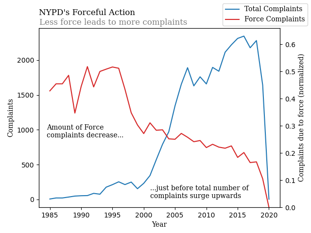
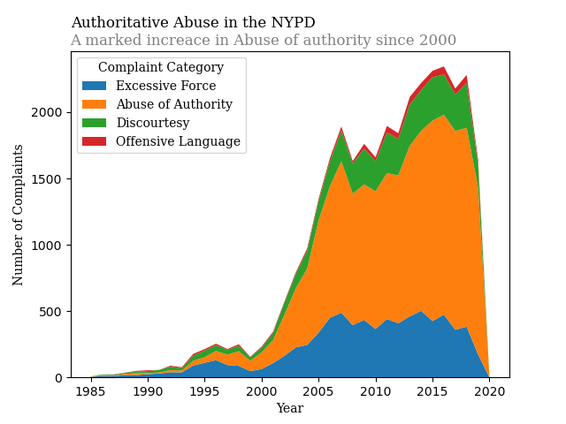

Proposition:
FOR the Proposition

Design Decisions and Rationale:
- Multiple Axis are used in the same plot in order to create the appearence of a large decrease in number of Excessive force complaints, directly agains a very large increase in the number of complaints overall
- The annotations are meant to draw the reader towards the trend that the plot is attempting to create
- Only one of the categories (the one which started as the largest) is plotted, so it is not as clear that this is folowed by a very large increase in a different complaint type
AGAINST the Proposition

Design Decisions and Rationale:
- Plotting the absolute values allows the viewer to more easily see that less of one category preportionaly will result in more of another categroy
- The focus in this plit is not the stagnation of one complaint type, but the increase in another, since this is more indecative of a trend than a stagnation is
- All Complaint categories are listed here, rather than simply displaying one, giving more context for how each is distributed and therefore making misinterpretation more difficult
Final Reflection
When Creating the visualizations, I mostly tried to think about what kinds of statistical and pliotting techniques would be more confusing to an audiance which was not as familiar with them. In the against plot, I tried to keep it as simple as possible, while also getting as much context as possible into one graph. The plot is therefore not as complex and does not apply any esspecialy complex data transformation methods, so as to be understandable and interperateable. For the FOR plot, I thought more about what kinds of statistical and plotting tecniques would be less familiar and therefore more confusing to readers without as strong of a stats background. The two simplest and most effective things I could come up with were multi-axis plotting and reletive vs absolute values. Most people who do not need to interact with lots of data and visualizations on a regular basis are less likely to pay as much attention to exactly what unit an axis is useing (partly accounting for the number of bad plots with poorly or unlabled axis), and therefore would focus more on the trend of each line over what exactly it was measuring. Thus, one line has a downwards trend while the other trends upwards and it is easy to assume that there is correlation there. Seccondly, the difference between absolute and reletive values can be confusing for many people, and I purposly only said that the force amount was "normalized", without specifying what against. If someone, for instance on social media, where to see a plot with a reletive value trending down, they would not nessesarily stop to think about the fact that that means that there must nessesarily be another value trending upwards, and since "Normalized" gives very little context, it is not obvious that this is scaled against the overall value